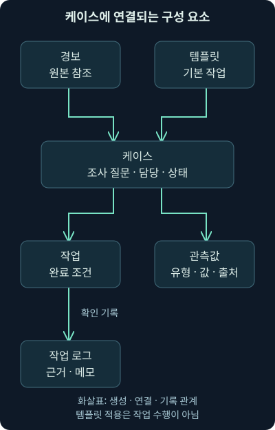
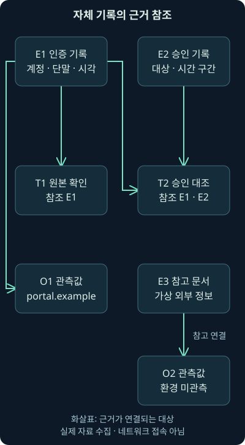
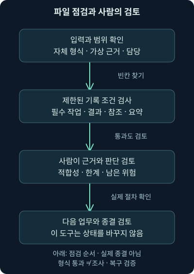

TheHive와 사건 기록 실습
첫째 날 10강. 케이스·작업·관측값과 현재 종결 조건을 이해하고, 내려받는 자체 JSON 기록으로 근거와 빈칸을 점검합니다.
1. 케이스를 만들었는데 무엇부터 채울까요?
가상 경보 하나를 사건 관리 도구에 옮겼습니다. 제목은 보이는데 관련 주소를 어디에 적고, 다른 분석가에게 무엇을 맡기고, 어떤 상태에서 마무리해야 할지 막막할 수 있습니다. 이번에는 9강에서 배운 기록의 구조를 실제 제품의 용어와 작은 자체 실습에 연결해 보겠습니다.
이번 10강의 범위는 TheHive의 경보·케이스·템플릿·작업·작업 로그·관측값, 분석과 대응 연동, 협업, 종결 전 점검입니다. 이어 내려받을 수 있는 자체 JSON 두 개와 Python 검사 도구로 기록의 빈칸을 찾아봅니다. 프로그램이 검사를 통과했다는 사실과 조사가 옳다는 판단을 구별하는 것이 실습의 핵심입니다.
본 교재에서 관련 실습으로 이어지는 안내를 확인했지만, 접근 가능한 자료에서 그 별도 워크북·가상 위키·원본 VM을 확보하지 못했습니다. 따라서 여기서는 교재의 세부 실습 절차나 실행 결과를 재현했다고 하지 않습니다. 직접 실행한 것은 자체 파일 검사뿐이며 TheHive·Cortex 설치, 실제 로그인·사건 생성·분석기 실행·차단은 수행하지 않았습니다.
2. 오래된 화면과 현재 설명을 연결하는 방법
TheHive는 보안 조사와 대응을 관리하는 제품의 한 예입니다. 경보를 받아 케이스로 연결하고, 작업과 메모·관측 단서를 묶어 협업하도록 돕습니다. 이 구조를 배우면 다른 제품을 써도 “우리 도구의 어떤 기능이 이 역할인가?”라고 비교할 수 있습니다.
기능 설명은 2026년 11월 4일 직접 확인한 StrangeBee 공식 문서를 기준으로 합니다. 문서 홈은 TheHive 6으로 표시되고 일부 개별 작업 안내에는 TheHive 5 표제와 6.0 변경 주석이 함께 있습니다. 아래에서는 확인한 항목과 버전 주석을 구분하며 한 버전을 설치해 모든 화면을 검증했다고 주장하지 않습니다.
과거의 버튼 위치와 아이콘을 그대로 따라 하기보다 사용 중인 버전·배포 방식·권한에 맞는 문서를 대조하세요. 특히 설정 변경·조직 간 공유·종결은 자료 접근과 업무 상태에 영향을 줄 수 있습니다. 이번 독립 실습에는 제품 계정이나 서버가 필요하지 않습니다.
3. 무료라는 말과 공개 소스라는 말을 나누기
과거 자료의 “무료 공개 소스 도구”라는 소개를 현재 모든 버전에 그대로 적용하면 설치와 운영에서 혼란이 생깁니다. 2026년 11월 4일 확인한 Community Edition 안내는 비상업용 자체 호스팅 무료판, 기능 제한과 최대 2명 사용자를 명시합니다. 무료로 쓸 수 있다는 조건이 모든 사용 목적·규모를 허용하는 것은 아닙니다.
현재 라이선스 문서는 Community를 포함한 종류별 라이선스 취득·활성화와 할당량을 설명합니다. 5.3 이후의 신규 설치·평가판과 Community 전환 조건도 별도로 있으므로 옛 안내만 보고 영구적으로 제한 없는 운영을 예상하지 않습니다. 본 강의를 위해 구매나 라이선스 신청을 진행하지 않았습니다.
학습 목적은 제품 선택을 대신 결정하는 것이 아닙니다. 도입하려면 실제 기능·사용 목적·운영 비용·지원 범위와 약관을 확인하고 9강의 업무 흐름으로 시험하세요. 아래 자체 파일 실습은 특정 제품 라이선스나 설치와 독립적으로 진행할 수 있습니다.
4. 여섯 구성 요소를 한 조사 질문으로 읽기
도구에 들어온 alert는 확인할 경보 항목입니다. case는 관련 조사 자료와 진행 상태를 묶는 케이스이고, case template은 반복 조사에 쓰는 기본 필드와 작업 틀입니다. task는 맡아서 수행할 작업, task log는 그 작업의 확인 내용과 진행 기록입니다. observable은 조사에 연결하는 관측값입니다.
가상 “새 단말 인증 확인” 경보를 예로 들면 케이스는 전체 조사, 템플릿은 인증 조사에 필요한 기본 질문, 작업은 원본 대조·승인 확인·범위 확인입니다. 작업 로그에는 무엇을 어떤 조건으로 확인했는지 적고 관측값에는 관련 서비스 이름이나 주소를 출처와 함께 연결합니다.

그림에서 경보와 템플릿이 케이스에 서로 다른 내용을 제공한다는 점을 보세요. 템플릿의 작업이 들어왔어도 작업이 실제 수행된 것은 아닙니다. 케이스 안의 관측값과 작업 기록은 역할이 다르며 한쪽에만 모든 정보를 쌓으면 관련성을 다시 찾기 어려워집니다.
5. 새 케이스인가, 이미 진행 중인 케이스인가?
가상 경보가 기존 조사와 같은 계정·실행·시간 범위를 가리키면 별도 케이스를 열기 전에 관련성을 확인합니다. 같은 도메인 하나가 있다는 이유만으로 합치면 무관한 조사와 접근 권한이 섞일 수 있습니다. 반대로 같은 원본 경보의 재전송마다 새 케이스를 만들면 담당과 집계가 갈라집니다.
2026년 11월 4일 확인한 경보에서 케이스를 만드는 공식 안내를 사용할 때도 원본 경보 참조·현재 질문·담당과 적용할 템플릿을 먼저 검토합니다. 이 강의에서 실제 제품 화면의 생성 버튼을 누른 것은 아닙니다.
처리하지 않기로 한 경보도 이유를 남깁니다. 정상으로 설명한 것인지, 중복인지, 필요한 자료가 없어 보류한 것인지는 다릅니다. “케이스를 만들지 않음”을 “침해가 절대로 없음”으로 바꾸지 않습니다.
6. 템플릿은 시작하는 내용과 질문을 채웁니다
인증 조사 템플릿에 대상 계정 확인, 원본 인증 대조, 승인된 변경 확인, 후속 위험 판단을 작업으로 둘 수 있습니다. 작업 그룹은 조사 단계나 기능별로 묶는 표지입니다. 공격 단계 이름으로 묶더라도 해당 단계가 실제 발생했다는 증거가 되지는 않습니다.
2026년 11월 4일 확인한 케이스 템플릿 문서는 기본 필드·작업·사용자 정의 항목 등을 미리 구성하는 흐름을 설명합니다. 공유 범위를 나타내는 TLP와 자료에 허용하는 행동 범위를 나타내는 PAP 같은 설정도 등장합니다. 이는 조직 정책과 해당 표준·제품의 정의를 대조해 정할 값이며 심각도나 침해 성공 여부와 같은 뜻이 아닙니다.
템플릿을 적용하면 필요한 질문을 빠뜨릴 가능성을 줄일 수 있지만 모든 케이스에 같은 정답을 넣어서는 안 됩니다. 필수·선택 여부, 적용되지 않는 이유와 예외 검토, 현재 버전을 함께 관리합니다. 템플릿을 나중에 고쳤다고 과거 케이스의 조사 내용까지 바뀌었다고 가정하지 않습니다.
7. 담당을 나누고 작업 로그로 연결하기
가상 케이스 담당자 analyst-a가 전체 범위와 인계를 맡고, analyst-b가 승인 기록을 대조한다고 합시다. 케이스의 전체 책임과 작업별 책임을 구분하면 협업하면서도 빠진 질문을 찾기 쉽습니다. 숙련 분석가가 수행한 작업의 근거와 한계는 다음 분석가의 학습 자료가 될 수도 있습니다.
작업 로그에는 단순히 “확인 완료”라고 쓰기보다 대상·시간·출처·질의 조건과 관측을 적습니다. 원본 참조를 달고 해석과 미확인 사항을 분리합니다. 진행하지 못했다면 권한 부족·자료 대기·도구 오류 중 무엇인지, 다음 담당과 기한이 무엇인지 남겨야 합니다.
작업 종결 문서는 필수 작업을 완료로 닫기 전에 적어도 하나의 작업 로그가 필요하다고 설명합니다. 확인일은 2026년 11월 4일입니다. 로그 한 줄이 있다는 형식 조건과 분석 내용이 충분하다는 품질 조건은 다릅니다. 아무 문장이나 넣어 상태를 바꾸는 행동은 조사를 검증해 주지 않습니다.
8. 관측값은 악성 목록과 같지 않습니다
가상 인증 기록에서 서비스 이름 portal.example을 읽었습니다. 조사에 관련되므로 관측값으로 저장할 수 있지만 이 이름을 악성 인프라로 판단한 것은 아닙니다. 사용자 이름·주소·도메인·URL·파일 해시도 조사에서 어떤 역할인지 나눠 기록해야 합니다.
관측값의 유형은 그 값이 도메인인지 IP 주소인지 파일인지 구별하는 분류입니다. portal.example과 https://portal.example/login은 같은 문자열이 아니며 도메인과 전체 URL이라는 차이가 있습니다. 기본 유형 외에 조직이 정한 유형을 사용할 수도 있지만 분석기가 받을 수 있는 입력과 검색·정규화의 의미를 확인해야 합니다. 원래 표기와 변환한 값을 함께 추적할 수 있어야 오타나 변환 오류를 찾기 쉽습니다.
여러 값을 한 번에 넣는 기능을 쓸 때는 입력 줄마다 독립 값으로 저장되는지, 하나의 값 목록으로 묶이는지 확인하세요. 옛 화면의 줄바꿈 방식이 현재 버전에도 같다고 가정하지 않습니다. 파일 유형은 단순 이름·해시를 적는 것과 실제 파일을 첨부하는 것이 다를 수 있으므로 자료의 보관·접근·전송 범위를 구분합니다.
2026년 11월 4일 확인한 관측값 문서는 유형·값, IOC 표시와 Sighted 표시를 구별합니다. IOC는 의심·악성 활동과의 연관 판단이고 Sighted는 환경에서 관측했는지를 나타냅니다. 두 값은 별도로 검토해야 합니다.
메일 첨부 안에서 URL 문자열을 찾았다면 “첨부 내용에서 그 값이 보였다”는 관측입니다. 단말이 그 URL에 접속했다거나 매크로가 실행되었다는 결과는 아닙니다. 값이 관측된 위치·방법·시각을 함께 기록해야 Sighted 표시를 후속 실행 증거로 오해하지 않습니다.
9. 두 표시의 네 조합을 구별합니다
외부의 가상 훈련 참고 자료가 reference.example을 의심 단서로 소개했지만 우리 자료에는 나타나지 않았다면 IOC는 표시하면서 Sighted는 끌 수 있습니다. 이 예시 도메인은 실제 악성 주소가 아니며 연관성도 자체 가상 설정입니다. 반대로 정상 인증 서비스는 환경 기록에서 보이므로 Sighted가 참이고 IOC는 거짓일 수 있습니다.
| 자체 사례 | IOC 표시 | 환경 관측 표시 | 해석 |
|---|---|---|---|
| 아직 맥락도 관측도 없는 참고 값 | 아니오 | 아니오 | 추가 정보 전의 단서 |
| 가상 외부 분석에서 의심, 환경에서는 미관측 | 예 | 아니오 | 우리 환경 접속·감염을 뜻하지 않음 |
| 정상 서비스가 환경 기록에 나타남 | 아니오 | 예 | 관측 자체가 악성은 아님 |
| 의심 연관성이 있고 환경에서도 발견 | 예 | 예 | 발견 위치와 실제 행위를 추가 검증 |
두 표시가 모두 참이어도 “침해 성공”이라는 세 번째 결론이 자동으로 생기지는 않습니다. 단말 실행·서버 처리·자료 접근·방화벽·리졸버의 관련 기록을 대조해 실제 관측 단계를 확인합니다. 관측하지 못했다면 수집 범위·기간과 암호화·재조립·손실 같은 한계를 적습니다.
10. 같은 값으로 연결됐다고 같은 공격일까요?
여러 케이스가 같은 조직의 인증 서비스 도메인을 포함하면 서로 비슷한 것으로 표시될 수 있습니다. 공유 프록시의 주소나 흔한 파일 이름도 마찬가지입니다. 유사성은 조사할 연결 후보이며 동일 공격자의 증명은 아닙니다. 유형·값·시각·자산·역할과 출처를 대조해야 합니다.
TheHive의 관측값과 유사성 설명은 관련성이 낮은 관측값을 유사성 검사에서 제외할 수 있으며 조직 간 연결과 경보 상태도 검색 범위에 영향을 준다고 설명합니다. 이 문서 확인일은 2026년 11월 4일입니다. 제외는 관련 없음의 판정이지 원본 자료의 삭제와 같은 뜻은 아닙니다.
관련 케이스가 표시되지 않아도 “과거 관측 없음”으로 확정하지 않습니다. 현재 조직·공유 권한·제외 설정·자료 보존·값 정규화에 따라 보이지 않을 수 있습니다. 같은 원본이 여러 화면에 나타난 것을 독립 관측 수로 부풀리지 않는 원칙도 그대로 적용됩니다.
11. 분석기와 대응기는 어떤 차이가 있나요?
Cortex는 TheHive와 연결해 관측 단서를 분석하거나 대응 작업을 실행하도록 하는 별도 엔진입니다. 분석기, analyzer는 입력을 받아 맥락을 보강하고 결과 보고서를 만드는 기능이고, 대응기, responder는 케이스·경보·작업 등에 실제 행동을 수행하도록 하는 기능입니다. 이름만 보고 작업의 효과를 판단하지 말고 각 구현을 읽어야 합니다.
2026년 11월 4일 확인한 Cortex 공식 설명은 두 역할과 연결 권한을 구별합니다. 5.5 이후에는 Cortex 3.1.5 이하가 지원되지 않는다는 버전 주석도 있으므로 오래된 조합을 그대로 설치하지 않습니다. 이는 특정 수정 버전을 영구적인 최신 버전으로 권하는 말이 아닙니다.
분석 작업도 외부 서비스에 주소나 파일을 보낼 수 있고 비용·기밀성에 영향을 줄 수 있습니다. 대응 작업은 계정·단말·방화벽 상태나 다른 사람에게 보내는 메시지를 바꿀 수도 있습니다. 입력·전송 대상·자격 증명·허용 범위·실패 처리·되돌림과 결과 검증을 확인해야 합니다. 이번 실습에는 외부 전송이나 자동 대응이 없습니다.
12. 실행 성공 표시와 실제 조치 효과는 다릅니다
가상 자동 작업이 “성공”을 반환했다고 합시다. 그 의미가 요청 접수인지, 대기열 등록인지, 실제 단말 적용인지 확인해야 합니다. 이미 처리된 요청을 재시도하면 중복 행동이 생길 수 있으므로 실행 ID와 대상·결과를 케이스에 연결합니다.
분석 보고서도 판결문이 아닙니다. 어떤 자료를 언제 조회했고 어떤 기준으로 판단했는지 확인합니다. 조회 실패·시간 초과·빈 결과와 정상 판정을 구별하고, 캐시된 과거 결과라면 그 시점을 봅니다. 캐시는 이전 결과를 다시 쓰도록 저장한 자료를 뜻합니다.
가상 자료의 위험 표시는 현재 질문의 참고 근거일 뿐입니다. 결과를 원본과 관련 단말·서버 기록에 대조한 뒤 판단을 갱신합니다. 보고서가 만들어졌다는 사실과 대응이 필요하다는 판단도 나누어야 합니다.
13. 제품의 종결 버튼이 품질을 대신 검증하지 않습니다
과거의 “필수 작업을 모두 끝내면 케이스를 닫는다”는 업무 원칙을 제품이 언제나 강제로 보장한다고 읽지 마세요. 2026년 11월 4일 확인한 케이스 종결 문서는 케이스를 닫을 때 남아 있는 작업도 영구적으로 닫히며 그 동작을 되돌릴 수 없다고 경고합니다. 남은 작업을 먼저 검토해야 하는 이유입니다.
같은 문서의 6.0 주석은 Impact 항목이 True Positive뿐 아니라 관리자가 영향 입력을 요구하도록 설정한 다른 종결 상태에도 나타날 수 있다고 설명합니다. 이전 버전에서는 True Positive에서만 나타나는 차이가 있습니다. 따라서 화면에 영향 항목이 보이는 조건을 과거와 같다고 가정하지 않습니다.
종결 전에는 작업 결과·근거·예외·미확인 범위와 남은 위험·인계를 검토하고 최종 분류와 요약을 남깁니다. 영향 없음과 영향 미확인은 다릅니다. 필수 사용자 정의 필드 등 도구의 형식 조건을 채웠다고 실제 조사와 복구가 자동으로 완전해지는 것은 아닙니다.
14. 이제 자체 실습 자료를 열어봅시다
이번에는 제품 대신 우리가 정의한 작은 기록 형식을 사용합니다. JSON은 이름과 값을 구조적으로 적는 표현 형식이고, true와 false는 참과 거짓을 나타냅니다. 아래 파일은 원본 사건·교재 실습 자료가 아닌, 이 강의를 위해 직접 만든 가상 입력입니다. TheHive API에 그대로 넣는 형식도 아닙니다.
시작 기록 case-start.json, 검토 후 기록 case-reviewed.json, 자체 검사 도구 review_case.py, 간단한 실행 안내를 같은 폴더에 저장하면 비교할 수 있습니다. Python 3이 필요하며 별도 패키지·서버·계정·인터넷 조회는 사용하지 않습니다. 파일을 내려받기만 해도 내용과 결과를 읽으며 학습할 수 있습니다.
가상 케이스의 질문은 “제시된 새 단말 인증 한 건이 승인 내용과 일치하는가?”입니다. E1은 인증 성공 기록, E2는 같은 계정·단말·서비스와 09:00~09:30 UTC 구간의 승인 기록, E3는 환경에서 발견되지 않은 가상 참고 정보입니다. 이 셋은 실제 수집한 증거가 아니라 판단 연습용으로 제공한 사실 설정입니다.
15. 질문·자료·작업의 연결을 따라가기
case_id는 자체 케이스 번호이고 owner는 전체 담당입니다. scope에는 기간·계정·단말·서비스와 조사 범위가 있습니다. evidence는 가상 근거 목록이고 각 항목의 id가 다른 필드에서 참조하는 이름입니다. observables에는 두 도메인의 유형·값·IOC·Sighted와 그 이유가 들어 있습니다.
tasks에는 작업 T1·T2·T3이 있습니다. required는 이 자체 점검에서 필수로 볼지, status는 업무 상태, result는 확인 내용, evidence_refs는 근거 ID 목록입니다. 이 필드 이름과 not_applicable 같은 상태는 우리 실습 형식이며 제품 API와 실제 상태 목록을 재현한 것이 아닙니다.

그림은 T1이 E1을 읽고 T2가 E1·E2를 대조한다는 관계를 보여줍니다. E3의 의심 도메인은 참고 자료의 단서로만 연결됩니다. 도메인이 케이스에 있다는 이유만으로 E1의 인증과 같은 네트워크 활동에 포함시키지 않는 것이 핵심입니다.
16. 첫 파일에서 왜 종결 검토를 막을까요?
시작 파일에서 T1은 가상 인증 원본을 확인한 상태지만 T2는 진행 중이고 결과·근거 참조가 비어 있습니다. 전체 요약도 없습니다. T3은 선택 작업이며 실제 계정 변경을 하지 않는 이번 실습의 범위에서 적용되지 않는 이유를 적었습니다.
검사 도구는 이 자체 실습의 기록 조건을 확인합니다. 전체 담당이 있는지, 필수 작업이 완료되었는지, 그 결과와 존재하는 근거 참조가 있는지, 관측값의 출처와 요약이 있는지를 봅니다. 실제 제품의 종결 허용 규칙을 흉내 낸 것이 아니라 종결 전 사람이 놓치기 쉬운 빈칸을 찾는 보조 장치입니다.
python review_case.py case-start.jsonpython은 설치된 Python 실행기를 부르는 예이고, review_case.py는 읽고 실행할 검사 파일, 마지막 이름은 검사할 입력입니다. 세 파일이 있는 폴더에서 실행하거나 각 파일의 실제 경로를 사용합니다. 도구는 지정한 JSON을 읽을 뿐 입력을 바꾸거나 네트워크에 접속하지 않습니다.
로컬 Python 3.12.14에서 실제 실행한 결과는 다음과 같습니다. 종료 코드 2는 이 도구가 검토 불가 또는 입력 오류로 정한 값입니다. 이 숫자를 다른 제품의 오류 코드 의미로 일반화하지 않습니다.
T2: not completed
T2: result missing
T2: evidence missing or unknown
case: summary missing
REVIEW BLOCKEDT2가 미완료라 첫 줄이, 확인 내용이 없어서 둘째 줄이, 근거가 비어서 셋째 줄이 나옵니다. 마지막 조건은 케이스 요약입니다. 경보가 악성이어서 막힌 것이 아니라 기록 검토 조건이 충족되지 않은 것입니다.
17. 어떤 조건을 검사하는지 코드를 읽어보기
전체 도구는 내려받은 파일에서 읽을 수 있습니다. 다음은 필수 작업을 검토하는 핵심 부분입니다. task는 현재 작업 하나, issues는 발견한 문제 목록, evidence_ids는 제시된 근거의 ID 집합입니다. 집합, set은 같은 값을 중복해서 보관하지 않는 자료 구조입니다.
for task in case.get("tasks", []):
if not task.get("required", False):
continue
task_id = task["id"]
if task.get("status") != "completed":
issues.append(f"{task_id}: not completed")
if not task.get("result", "").strip():
issues.append(f"{task_id}: result missing")
refs = set(task.get("evidence_refs", []))
if not refs or not refs.issubset(evidence_ids):
issues.append(f"{task_id}: evidence missing or unknown")get("tasks", [])는 작업 목록을 꺼내고 없으면 빈 목록을 씁니다. required가 거짓이면 continue로 그 작업의 필수 점검을 건너뜁니다. !=는 같지 않다는 비교이고, append는 발견한 문제를 목록에 추가합니다. strip()은 앞뒤 공백을 지우므로 공백만 넣은 결과를 완료 근거로 보지 않습니다.
마지막 조건의 not refs는 근거 목록이 비었는지, issubset은 모든 참조 ID가 실제 제공 목록 안에 있는지 확인합니다. 둘 중 하나라도 맞으면 문제로 기록합니다. 존재하지 않는 E99를 써놓고 근거가 있다고 표시하는 실수를 잡기 위한 조건입니다.
하지만 작업 목록 자체가 비어 있거나 중복 ID가 있는 상황 등은 이 작은 도구가 모두 검증하지 않습니다. 현재 제공한 자료의 필드 구조를 전제로 한 학습용 검사이며 완전한 형식·권한·이력·증거 진실성 검사기가 아닙니다. 통과의 의미를 이 범위 밖으로 넓히지 마세요.
18. 두 번째 파일은 무엇이 달라졌나요?
검토 후 파일에서 T2는 E1·E2의 계정·단말·서비스·시간 구간을 대조했다는 결과와 두 근거 ID를 갖습니다. 전체 요약에는 대상 인증 한 건의 승인 맥락과 실습 범위, 실제 환경의 침해·복구 상태를 평가하지 않았다는 한계를 남겼습니다. 제시된 두 기록이 같은 대상을 가리킨다는 가상 조건에서 가능한 판단입니다.
python review_case.py case-reviewed.json같은 로컬 Python 3.12.14에서 실행한 출력은 다음과 같고 종료 코드는 0입니다. 입력 파일의 status는 여전히 in_progress이며 검사 도구는 케이스 상태를 변경하지 않습니다.
REVIEW READY (record checks only)이는 “기록 조건상 검토 준비됨”입니다. 실제 조직에서 승인된 변경이 있었는지 검사한 결과가 아니며 실제 케이스가 종결되었다는 뜻도 아닙니다. 존재하는 ID를 참조해도 그 자료가 질문에 답하는지, 내용이 정확하고 충분한지는 사람이 검토해야 합니다.
19. 조건을 하나 바꾸며 한계를 확인하기
T2의 상태만 completed로 바꾸고 결과와 근거는 비워 두면 어떻게 될까요? 미완료 경고는 없어지지만 결과와 근거 누락, 요약 누락은 남습니다. “완료”라는 단어만으로 기록이 충분해지지 않는다는 뜻입니다. 실제로 이 조건도 별도 복사본에서 검사했습니다.
반대로 엉뚱한 문장을 결과에 쓰고 존재하는 근거 ID를 넣으면 단순 형식 검사는 지나갈 수 있습니다. 이 문제는 코드 검사를 조금 늘리는 것만으로 완전히 해결되지 않습니다. 근거의 출처와 수집 조건, 대상·시간·행위의 연결, 반대 설명을 사람이 평가해야 합니다.
잘못된 JSON이나 읽을 수 없는 파일을 지정하면 INPUT ERROR와 오류 종류를 표시하고 종료 코드 2를 반환합니다. 파일이 열리지 않은 것과 조사상 의심이 발견된 것을 구분하세요. 입력 오류를 정상 판정으로 바꾸면 기록 검사의 출발점부터 무너집니다.
20. 교대와 종결 전에 한 번 더 이어서 읽기
가상 케이스를 다음 근무자에게 넘긴다면 범위·원본 참조·현재 질문, T1/T2의 결과와 E1/E2의 관계, O2가 환경 미관측 참고 단서라는 점을 함께 남깁니다. 작업 담당자가 다르더라도 전체 담당자는 빠진 질문과 다음 결정을 확인합니다.
제품에서 실제로 종결할 때는 남은 작업을 자동으로 닫는 효과를 먼저 검토하고, 결과에 맞는 상태·영향·요약·필수 항목을 확인합니다. 이번 파일 점검은 그 검토를 돕는 연습입니다. 실제 조치와 복구 검증, 필요한 통보·인계가 빠졌는지는 별도의 사건 절차로 확인해야 합니다.

그림의 마지막 상자가 “자동 종결”이 아닌 이유를 설명해 보세요. 도구가 확인하는 것은 제한된 기록 조건이고, 실제 결론과 위험·영향은 근거에 대한 판단이 필요하기 때문입니다. 다음 11강에서는 케이스에 붙인 외부 단서와 분석을 위협 정보라는 관점에서 이어갑니다.
21. 복습과 바로 읽는 해설
질문 1. 템플릿 작업이 케이스에 생기면 조사도 수행된 것인가요?
해설: 아닙니다. 템플릿은 기본 질문과 입력 틀을 제공합니다. 담당자가 실제 확인한 조건·결과·근거를 작업 로그에 남겨야 수행 상태를 판단할 수 있습니다.
질문 2. case와 task의 담당자가 달라도 괜찮을까요?
해설: 전체 진행 책임과 개별 작업 책임을 나눌 수 있습니다. 작업별 결과가 같은 조사 질문으로 이어지고 담당·기한·인계가 명확해야 공동 조사와 학습에 도움이 됩니다.
질문 3. IOC가 거짓이고 Sighted가 참이면 모순인가요?
해설: 정상 서비스처럼 환경에서 관측되었지만 의심·악성 연관 판단이 없는 값일 수 있습니다. 발견 여부와 위험 연관성은 다른 축입니다.
질문 4. 첨부 안 URL을 봤으니 단말이 접속한 것이 맞나요?
해설: 문자열이 첨부에서 발견된 사실입니다. 실제 접속·실행은 네트워크와 단말 등의 별도 관측이 필요합니다. 발견 위치와 행위를 함께 기록해야 표시를 과대 해석하지 않습니다.
질문 5. 같은 도메인으로 두 케이스가 연결되면 같은 공격자인가요?
해설: 공통 인증 서비스나 프록시일 수 있습니다. 유사성은 연결 후보이며 시각·자산·실행·역할과 출처를 검증해야 합니다. 조직·권한·제외 설정에 따라 표시 범위도 달라집니다.
질문 6. 분석기라면 외부 전송이나 부작용은 없을까요?
해설: 구현에 따라 외부 조회·파일 전송·과금이 있을 수 있습니다. 입력·전송 대상·권한·자료 정책을 확인합니다. 대응기는 실제 상태를 바꿀 수 있으므로 요청 접수와 적용 효과도 나눠 검증합니다.
질문 7. 과거의 무료 공개 소스 소개만 보고 현재 업무에 제한 없이 도입해도 될까요?
해설: 현재 라이선스와 목적·규모·할당량·지원 조건을 확인해야 합니다. 확인한 Community 안내는 비상업용과 사용자 제한을 명시합니다. 무료라는 말과 모든 사용을 허용한다는 말은 다릅니다.
질문 8. 실제 제품이 남은 작업을 닫아주니 그대로 종결해도 될까요?
해설: 자동으로 닫는 기능은 작업이 수행됐다는 증거가 아닙니다. 현재 공식 문서의 남은 작업 종결 경고를 확인하고 결과·예외·위험과 후속 업무를 먼저 검토해야 합니다.
질문 9. 시작 파일에서 T2 상태만 바꾸면 검사가 통과할까요?
해설: 결과·근거 참조와 전체 요약 누락이 남아 통과하지 않습니다. 여러 조건을 검사하는 이유는 상태 단어 하나로 완료를 대신하는 실수를 찾기 위해서입니다.
질문 10. 존재하지 않는 E99를 근거로 적으면 어떻게 되나요?
해설: 근거 ID 집합의 부분집합이 아니므로 참조 오류로 표시됩니다. 반대로 존재하는 E1을 썼더라도 내용이 질문에 맞는지는 검사 도구가 판단하지 못합니다.
질문 11. 두 번째 파일의 종료 코드 0은 실제 정상·복구 완료 판정인가요?
해설: 이 자체 도구의 제한된 기록 조건 통과입니다. 실제 증거의 진실성이나 조사 범위 전체를 검증하지 않았고 입력 상태도 바꾸지 않았습니다. 사람의 종결 검토를 대체하지 않습니다.
질문 12. 다음 근무자에게 어떤 세 가지 구분을 꼭 남길까요?
해설: 관측 사실과 가설·미확인 결론, 환경 관측과 외부 참고 정보, 실제 수행한 작업과 예정·보류 작업을 구분합니다. 원본 참조와 다음 담당·확인 조건을 연결하면 같은 자료로 조사를 이어갈 수 있습니다.